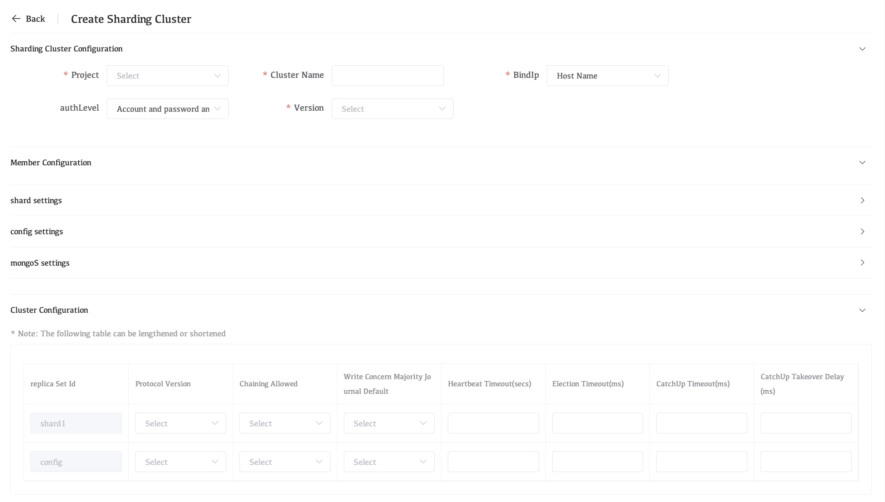
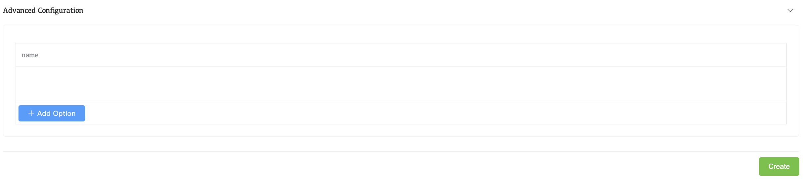

Deploy a Sharded Cluster
Whaleal provides a wizard for adding your existing MongoDB deployments to monitoring and management. The wizard prompts you to:
- Install the Agent if you don't have it installed
- Identify the sharded cluster, the replica set, or the standalone to add. You can choose to add the deployment to Monitoring or to both Monitoring and Automation.
Considerations
Unique Names for Sharded Clusters
Use unique names for the new cluster and its shards.
IMPORTANT
Replica set, sharded cluster, and shard names within the same project must be unique. Failure to have unique names for the deployments will result in broken backup snapshots.
Procedure
Navigate to the Deployment page for your project.
- If it is not already displayed, select your desired project from the Projects menu in the navigation bar.
- If it is not already displayed, click MongoDB in the sidebar.
Open the Cluster Creation View.
Click the Create Cluster arrow in the top-right of the MongoDB page. Select Sharding Cluster from the drop-down menu to open the Create Sharding Cluster view.

Configure Cluster-Wide Settings.
The Cluster Configuration section contains the following cluster-wide configuration settings. Settings marked with an * asterisk in the Whaleal UI are required**.
| Setting | Description |
|---|---|
| Project | Select the Project name of your replica set deployment. You cannot change this once set. |
| Cluster Name | The name of the replica set. It must be a unique name. |
| BindIp | The BindIp setting in MongoDB specifies the IP addresses that the MongoDB server will listen on for incoming connections. |
| Version | Select the MongoDB server version of the mongod process. |
| AuthLevel | Select authentication method |
Configure Each Shard in Your Cluster.
From the Member Configuration section, click Shard Settings to open the shard configuration options. Whaleal lists each shard in the cluster and the mongod processes associated to that shard. Each shard process has the following options:
| Setting | Description |
|---|---|
| Member | Select one of the following replica set member roles from the menu:Ordinary member nodeA data-bearing member of the replica set that can become the primary and vote in elections.Hidden nodeA data-bearing member of the replica set that can vote in elections. Corresponds to the hidden replica configuration option.Hidden delay nodeA data-bearing member of the replica set that can vote in elections. |
| Hostname | Select from the menu the host to which Whaleal Automation deploys the replica set member. The menu only lists hosts under Whaleal Automation. For complete documentation on adding servers to Whaleal Automation.This hostname can be a hostname or an IPv4 address. |
| Port | Specify the IANA port number for the mongodprocess. This setting corresponds to the net.port configuration file option.The mongod must have exclusive access to the specified port. If deploying multiple mongod processes to a single host, you must select a unique unused port for each process. |
| Votes | Specify the number of votes that the replica set member has during elections. This setting corresponds to the votes mongod replica set configuration option. |
| Priority | Specify the priority of the member during elections. Replica set members with a priority of 0 cannot become the primary node and cannot trigger elections. This setting corresponds to the priority mongod replica set configuration option. |
| Delay | Specify the number of seconds "behind" the primary member this member should "lag". This setting corresponds to the secondaryDelaySecs mongodreplica set configuration option. |
| Data Directory | Specify the directory where the mongod process stores data files. This setting corresponds to the storage.dbPath mongod configuration file option. The Whaleal Automation must have file system permission to read, write, and execute all files and folders in the specified directory.Each mongod process must have its own database directory. If deploying multiple mongod processes on the same host, ensure each process has its own distinct directory.It is recommended to mount a separate disk under the /data directory and specify the MongoDB data storage directory under /data. |
| Log File | The log file and data file are in the same directory, and the directory cannot be customized. |
| Build Indexes | Specify true to direct the mongod to build indexes. This setting corresponds to the buildIndexes mongod replica set configuration option. |
To add additional shards to the cluster:
- Click Add a Shard.
- Under the Cluster Configuration section, set the following parameters for each
mongodin the shard: - Version
- Data Directory
Configure Each Configuration Server in Your Cluster.
| Setting | Description |
|---|---|
| Member | Select one of the following replica set member roles from the menu:Ordinary member nodeA data-bearing member of the replica set that can become the primary and vote in elections.Hidden nodeA data-bearing member of the replica set that can vote in elections. Corresponds to the hidden replica configuration option.Hidden delay nodeA data-bearing member of the replica set that can vote in elections. |
| Hostname | Select from the menu the host to which Whaleal Automation deploys the replica set member. The menu only lists hosts under Whaleal Automation. For complete documentation on adding servers to Whaleal Automation.This hostname can be a hostname or an IPv4 address. |
| Port | Specify the IANA port number for the mongodprocess. This setting corresponds to the net.port configuration file option.The mongod must have exclusive access to the specified port. If deploying multiple mongod processes to a single host, you must select a unique unused port for each process. |
| Votes | Specify the number of votes that the replica set member has during elections. This setting corresponds to the votes mongod replica set configuration option. |
| Priority | Specify the priority of the member during elections. Replica set members with a priority of 0 cannot become the primary node and cannot trigger elections. This setting corresponds to the priority mongod replica set configuration option. |
| Delay | Specify the number of seconds "behind" the primary member this member should "lag". This setting corresponds to the secondaryDelaySecs mongodreplica set configuration option. |
| Data Directory | Specify the directory where the mongod process stores data files. This setting corresponds to the storage.dbPath mongod configuration file option. The Whaleal Automation must have file system permission to read, write, and execute all files and folders in the specified directory.Each mongod process must have its own database directory. If deploying multiple mongod processes on the same host, ensure each process has its own distinct directory. |
| Log File | The log file and data file are in the same directory, and the directory cannot be customized. |
| Build Indexes | Specify true to direct the mongod to build indexes. This setting corresponds to the buildIndexes mongod replica set configuration option. |
Configure Each mongos in Your Cluster.
From the Member Configuration section, click Mongos Settings to open the mongos configuration options. Each mongos process has the following options:
| Setting | Description |
|---|---|
| Hostname | Select from the menu the host to which Whaleal Automation deploys the mongos. The menu only lists hosts under Whaleal Automation. For complete documentation on adding servers to Whaleal Automation. This hostname can be a hostname or an IPv4 address. |
| Port | Specify the IANA port number for the mongos process. This setting corresponds to the net.port configuration file option. Defaults to 27017.The mongos must have exclusive access to the specified port. If deploying multiple mongos processes to a single host, you must select a unique unused port for each process. |
| Add a Mongos | Click to add an additional mongos process. |
Configure Each Replica Set in your Cluster.
The Replication Settings section contains the following configuration options for each replica set in the cluster:
| Setting | Description |
|---|---|
| Replica Set Id | Names of components in the sharded cluster |
| Protocol Version | Select the replication protocol version used by the replica set. This setting corresponds to the protocolVersion replica set configuration option.For more information, see Replica Set Protocol Versions. |
| Chaining Allowed | Specify true to allow secondary members to replicate from other secondary members. This setting corresponds to the chainingAllowed replica set configuration option. |
| Write Concern Majority Journal Default | Determines the behavior of {w:"majority"} write concern if the write concern does not explicitly specify the journal option j. This setting corresponds to the writeConcernMajorityJournalDefaultreplica set configuration option. |
| Heartbeat Timeout (secs) | Specify the number of seconds that the replica set members wait for a successful heartbeat from each other. This setting corresponds to the heartbeatTimeoutSecs replica set configuration option. |
| Election Timeout (ms) | Specify the time limit in milliseconds for detecting when a replica set's primary is unreachable. This setting corresponds to the electionTimeoutMillis replica set configuration option. |
| CatchUp Timeout (ms) | Specify the time limit in milliseconds for a newly elected primary to sync, or catch up, with the other replica set members that may have more recent writes. This setting corresponds to the catchUpTimeoutMillisreplica set configuration option. |
| CatchUp Takeover Delay (ms) | Specify the time in milliseconds a node waits to initiate a catchup takeover after determining it is ahead of the current primary. This setting corresponds to the catchUpTakeoverDelayMillis replica set configuration option. |
Set the default read and write concerns for your MongoDB replica set.
In the Default Read Concerns/Write Concerns card, you configure the default level of acknowledgement requested from MongoDB for read and write operations for this cluster. Setting the default read and write concern can help with MongoDB 5.0 and later deployments using arbiters.
From the Default Read Concerns section, you can set consistency and isolation properties for the data read from the cluster.
Set any advanced configuration options for your MongoDB replica set.
The Advanced Configuration Options section allows you to set MongoDB runtime options for each MongoDB process in your deployment.
To add an option:
- Click Advanced Configuration.

-
Click Add Option and select the configuration option.
-
Whaleal displays a context-sensitive input for configuring an acceptable value for the selected option.
-
Click Confirm to add the selected option and its corresponding value to every process of the selected process type in the cluster.
Click Create Cluster.
Whaleal redirects you to the MongoDB List view, where you must review the cluster configuration before Whaleal begins deployment.